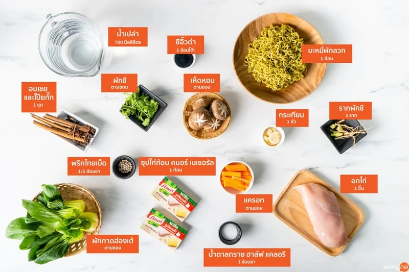
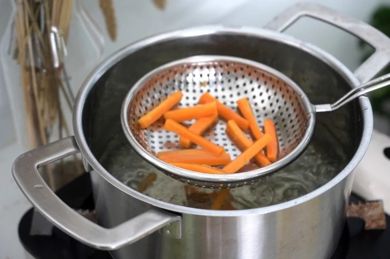
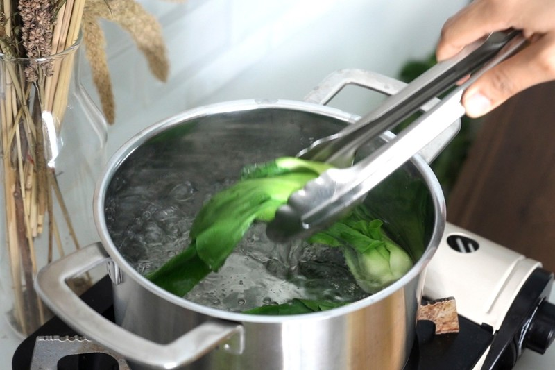
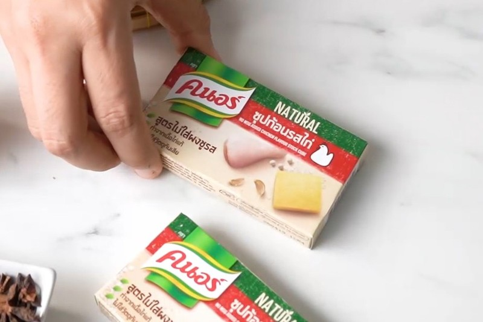
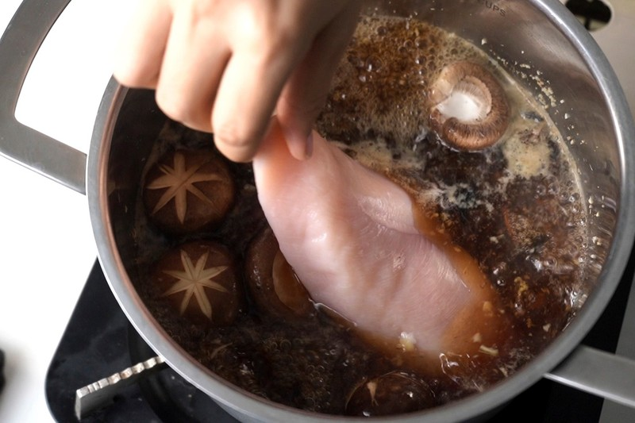
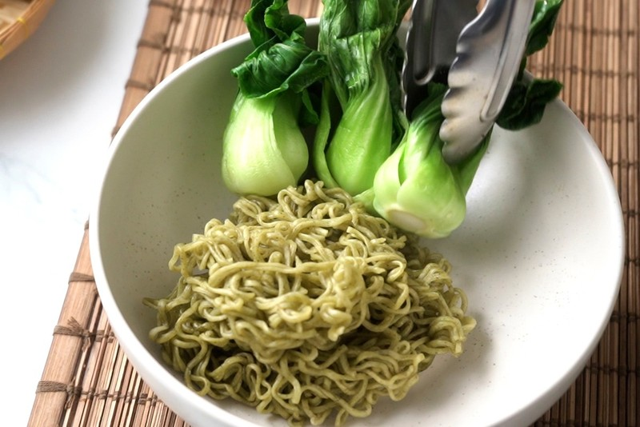

บะหมี่ผักอกไก่ตุ๋น
300 Kcal/เสิร์ฟ
วันนี้จะชวนเพื่อน ๆ เข้าครัวมาทำเมนู “บะหมี่ผักอกไก่ตุ๋น” โดยมื้อนี้เราจะเน้นสุขภาพสุด ๆ เหมาะกับเทรนด์สุขภาพที่มาแรงตอนนี้เลย หลายคนอาจจะมองว่าเมนูอาหารเพื่อสุขภาพไม่อร่อย แต่วันนี้แก้มมีเคล็ดลับดี ๆ มาฝาก รสชาติจะเป็นอย่างไร รีบตามเข้าครัวมาเลยจ้า
วิธีทำ “บะหมี่ผักอกไก่ตุ๋น” เมนูไก่ เอาใจคนรักสุขภาพ
วัตถุดิบ
1. บะหมี่ผักลวก 1 ก้อน2. อกไก่ 1 ชิ้น
3. ซุปไก่ก้อน คนอร์ เนเชอรัล 1 ก้อน
4. น้ำตาลทราย ฮาล์ฟ แคลอรี 1 ช้อนชา
5. ซีอิ๊วดำ 1 ช้อนโต๊ะ
6. อบเชย และโป๊ยกั๊ก 1 ชุด
7. รากผักชี 3 ราก
8. กระเทียม 1 หัว
9. พริกไทยเม็ด ½ ช้อนชา
10. เห็ดหอม ตามชอบ
11. น้ำเปล่า 700 มิลลิลิตร
12. ผักกาดฮ่องเต้ ตามชอบ
13. ผักชี ตามชอบ
14. แครอท ตามชอบ
วิธีทำ
STEP 1 : ลวกผัก
- ลวกแครอทในน้ำเดือด 30 วินาที ตักออกพักไว้- ลวกผักกาดฮ่องเต้ในน้ำเดือด 10 วินาที ตักออกพักไว้
TIP : ใส่เกลือในน้ำที่จะนำผักไปลวก จะช่วยให้ผักสีสดค่ะ
 
ลวกแครอท ลวกผักกาดฮ่องเต้
STEP 2 : อกไก่ตุ๋น
- โขลกสามเกลอ ได้แก่ กระเทียม รากผักชี และพริกไทยเม็ด เข้าด้วยกันให้ละเอียด- นำหม้อขึ้นตั้งไฟปานกลาง เทน้ำเปล่าลงไป ใส่อบเชย และโป๊ยกั๊ก และรอจนเดือด
- ใส่สามเกลอ ซุปไก่ก้อน คนอร์ เนเชอรัล น้ำตาลทราย ฮาล์ฟ แคลอรี ซีอิ๊วดำ ลงไป จากนั้นใส่อกไก่ และเห็ดหอม ลงไปตุ๋น 1 ชั่วโมง
 
ซุปไก่ก้อนคนอร์ ใส่อกไก่ลงไปตุ๋น
STEP 3 : จัดเสิร์ฟ
- นำอกไก่ที่ตุ๋นจนนุ่มแล้วขึ้นมาหั่นเป็นชิ้น- นำบะหมี่ผักลวกจัดใส่ชาม ตามด้วยแครอทลวก คะน้าลวก เห็ดหอม และอกไก่ตุ๋น ตกแต่งด้วยผักชี พร้อมเสิร์ฟจ้า
